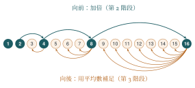

STEP II 1993，第 8 題
繼續之前，請先閱讀題目（原題為英文）。題目載於 STEP Support Programme 的題目資料庫： step.maths.org/questions/93-s2-q8
引子
算術平均—幾何平均不等式（arithmetic mean–geometric mean inequality，簡稱 AM–GM）也許是數學中最有用的一條不等式。它說的是：對於正數，普通的平均數總是不小於「乘法意義下的平均數」，而且只有當所有數都相等時，等號（equality）才成立。它不用微積分就能解決最優化（optimisation）問題，可以用來證明其他不等式，並且在分析學（analysis）的每一個分支中都會出現。
這道題用一種奇特而優美的歸納法（induction）來證明它，這個方法由柯西（Augustin-Louis Cauchy）於 1821 年提出。它不是由 \(n\) 走到 \(n + 1\)，而是由 \(2\) 躍到 \(4\)，再到 \(8\)、\(16\)，只涵蓋 \(2\) 的冪，然後掉頭往下走，把中間的數補上。它提醒我們，「歸納法」這個想法遠比課本上的版本靈活。
動筆之前
網上試題庫所載的這份試卷有一處誤植：它寫的是「\(b_1 = a_2\)」。那當然應該是 \(b_1 = a_1\)；意思是 \(b\) 這一列數就是 \(a\) 那一列數，再用它們的平均數的若干個副本補足。
為甚麼由 \(2^m\) 個數走到 \(2^{m+1}\) 個數，可能比由 \(n\) 走到 \(n + 1\) 容易？
因為 \(2^{m+1}\) 個數可以自然地分成兩組，每組 \(2^m\) 個；你可以對每一半應用歸納假設（inductive hypothesis），然後用兩個數的情形把兩半合起來。由 \(n\) 走到 \(n + 1\)，就沒有這樣對稱的結構可供利用。
逐步解題
階段 1 兩個數
\(\left( \frac{a_1 + a_2}{2} \right)^2 - a_1 a_2 = \frac{a_1^2 + 2a_1a_2 + a_2^2 - 4a_1a_2}{4} = \frac{(a_1 - a_2)^2}{4} \geq 0.\)■
階段 2 加倍
\(m = 1\) 的情形就是第 1 階段。假設 \((*)\) 對 \(2^m\) 個數成立，現取 \(2^{m+1}\) 個正數。
把這 \(2^{m+1}\) 個數分成前半和後半，設 \(P\) 和 \(Q\) 分別為兩半的算術平均。歸納假設對每一半說了甚麼？
對每一半應用 \((*)\)， \[a_1 \cdots a_{2^m} \leq P^{2^m} \qquad\text{及}\qquad a_{2^m + 1} \cdots a_{2^{m+1}} \leq Q^{2^m}.\] 兩式相乘（所有數都是正數），全部 \(2^{m+1}\) 個數的積不大於 \((PQ)^{2^m}\)。現在由兩個數的情形得 \(PQ \leq \left( \frac{P + Q}{2} \right)^2\)，而 \(\frac{P + Q}{2}\) 正好是全部 \(2^{m+1}\) 個數的平均數。所以 \[a_1 \cdots a_{2^{m+1}} \leq (PQ)^{2^m} \leq \left( \frac{P + Q}{2} \right)^{2^{m+1}} = \left( \frac{a_1 + \cdots + a_{2^{m+1}}}{2^{m+1}} \right)^{2^{m+1}},\] 這就是 \(m + 1\) 時的 \((*)\)。由歸納法可知，只要項數是 \(2\) 的冪，AM–GM 就成立。■
階段 3 填補空隙
現在取任意的 \(n\)，並選取 \(m\) 使得 \(2^m > n\)。我們在數列 \(a_1, \ldots, a_n\) 之後補上 \(2^m - n\) 個它自己的平均數 \(A\)。
補足後的數列 \(b_1, \ldots, b_{2^m}\) 的平均數是多少？
其總和為 \((a_1 + \cdots + a_n) + (2^m - n)A = nA + (2^m - n)A = 2^m A\)，所以平均數就是 \(A\) 本身。加入平均數的副本並不會改變平均數。因此，對 \(b\) 這一列數應用 \((*)\)，得 \[a_1 \cdots a_n \cdot A^{2^m - n} \leq A^{2^m}.\]
完成這個證明。
兩邊同除以 \(A^{2^m - n}\)（這是正數）：\(a_1 \cdots a_n \leq A^n\)。取 \(n\) 次方根， \[(a_1 \cdots a_n)^{1/n} \leq A = \frac{a_1 + \cdots + a_n}{n}. \qed\]
回顧
沿另一條路徑作歸納。第 2 階段是對 \(m\) 作歸納，涵蓋 \(n = 2, 4, 8, \ldots\)；第 3 階段則是由任何一個 \(2\) 的冪往下走到任何較小的 \(n\) 的方法（圖 3.2.1）。
用平均數補足。把數列加長而不改變其平均數，這個技巧值得記住；它能把關於任意 \(n\) 的問題，化為關於一個方便的 \(n\) 的問題。
等號何時成立？沿着證明往回追溯，等號成立需要每一次使用兩個數的情形時等號都成立，而這只有在所有數都相等時才會發生。

背後的數學
柯西在他的《Cours d’analyse》（1821）中發表了這個證明；我們在第 2 章談過，正是這本書開創了分析學的嚴格處理。這種技巧現在稱為向前—向後歸納法（forward–backward induction）：先對無窮多個情形組成的一個序列（這裏是 \(2\) 的冪）證明命題成立，然後證明 \(n\) 的情形蘊含 \(n - 1\) 的情形。兩者合起來，就能到達每一個 \(n\)。我們的第 3 階段是由 \(2^m\) 直接跳到 \(n\)，但你也可以一步一步來：在 \(n - 1\) 個數之後補上一個它們的平均數，就能證明 \(n\) 的情形蘊含 \(n - 1\) 的情形。
一條不等式，多種證明
AM–GM 有數十種證明，把它們互相比較，是認識不同數學風格的好方法。
利用凸性（convexity）。對數（logarithm）函數是凹（concave）函數，所以對數的平均不大於平均的對數。取指數之後，這就是 AM–GM；這也是 第 3.3 節 的主題。
波利亞（George Pólya）的證明。利用 \(e^{x - 1} \geq x\)（\(e^{x-1}\) 在 \(x = 1\) 處的切線位於曲線下方）。設 \(A\) 為平均數，把這條不等式應用於每一個 \(a_i/A\)，然後相乘：\(\prod \frac{a_i}{A} \leq e^{\sum (a_i/A - 1)} = e^0 = 1\)。波利亞說這個證明是他在夢中想到的。
利用磨光法（smoothing）。如果其中兩個數不相等，就把它們都換成兩者的平均數。算術平均不變，而由兩個數的情形可知，乘積會增大。重複這個步驟，所有數就會被推向平均數。
不用微積分的最優化
AM–GM 能把許多最優化問題變成一行就能解決的問題。在表面積固定的所有長方體盒子當中，哪一個體積最大？在周界固定的所有長方形當中，哪一個面積最大？（是正方形，由兩個數的情形可知：\(xy \leq \bigl(\frac{x+y}{2}\bigr)^2\)，等號當 \(x = y\) 時成立。）等號成立的條件告訴你最優值在哪裏出現，而不等式則告訴你那確實是最優值，而不僅僅是一個駐點（stationary point）。可與 第 3.1 節 中的告誡比較。
思維技巧
歸納法不一定要按 \(1, 2, 3, \ldots\) 的次序進行。只要一條路徑能到達每一個情形，你就可以沿着它作歸納：可以加倍，可以用強歸納法（strong induction），也可以先在一個子數列（subsequence）上向前走，再向後走以填補空隙。
當由 \(n\) 到 \(n+1\) 這顯而易見的一步難以走通時，不妨問問哪一步會容易走，以及能否靠這一步到達每一個情形。
延伸練習
後退一步。補上一個平均數的副本，直接證明：若 AM–GM 對 \(n\) 個數成立，則它對 \(n - 1\) 個數也成立。
一個遞增數列。把 AM–GM 應用於 \(1 + \frac1n, \ldots, 1 + \frac1n, 1\) 這 \(n + 1\) 個數（其中 \(1 + \frac1n\) 有 \(n\) 個），證明 \(\left(1 + \frac1n\right)^n < \left(1 + \frac{1}{n+1}\right)^{n+1}\)。
最好的盒子。一個密封的長方體盒子的表面積為 \(S\)。把 AM–GM 用於三個不同的面的面積，證明其體積不大於 \((S/6)^{3/2}\)，等號在盒子為正方體時成立。
調和平均（harmonic mean）。把 AM–GM 應用於 \(1/a_i\) 這些數，證明調和平均 \(\dfrac{n}{1/a_1 + \cdots + 1/a_n}\) 不大於幾何平均。
延伸閱讀
J. Michael Steele, The Cauchy–Schwarz Master Class（Cambridge University Press）。一本以問題帶動、講不等式的出色著作，正好由這個程度起步。第 2 章講的就是 AM–GM。
Hardy, Littlewood & Pólya, Inequalities（Cambridge University Press）。經典參考書，由二十世紀三位偉大的分析學家撰寫。
Arthur Engel, Problem-Solving Strategies（Springer）。第 7 章收錄了大量來自數學奧林匹克的不等式題目。